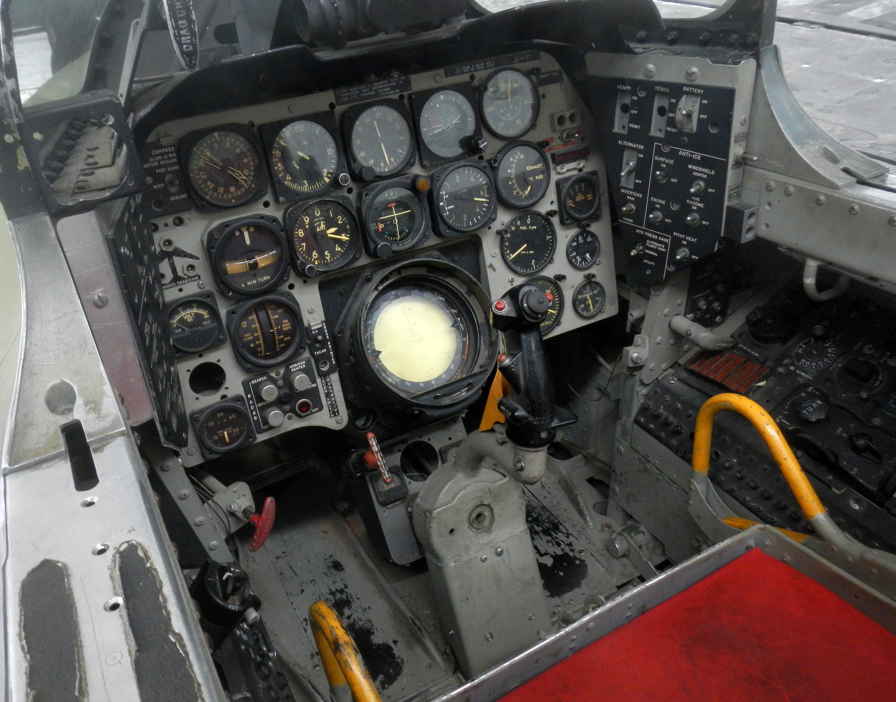

Synopsis
The F-86 Sabre is a single-engine, supersonic jet fighter aircraft that was introduced by the United States Air Force (USAF) in the late 1940s. It was designed to counter Soviet MiG-15 aircraft in the Korean War, and it quickly became one of the most iconic fighter planes of the 20th century. The F-86 was capable of flying at speeds of up to Mach 0.9 and had a range of over 1,000 miles. It was armed with six .50 caliber machine guns and could carry up to 2,000 pounds of bombs or rockets. The F-86 saw extensive service with the USAF and its allies in various conflicts, and it was also used by several foreign air forces. The last F-86s were retired from active service in the early 1990s, but the plane continues to be popular among aviation enthusiasts and as a display aircraft.
Design
After World War II, the United States obtained valuable knowledge and expertise from Nazi scientists, including aerospace engineer Wernher von Braun and his team, who had developed advanced rocket technology for Germany. Many of these scientists were brought to the US as part of Operation Paperclip, a secret program that aimed to prevent Nazi scientists from falling into Soviet hands and instead put them to work for the US.The knowledge gained from these scientists played a significant role in the design of the F-86, particularly in the development of swept-wing technology. The concept of swept wings was first proposed by German aerodynamicist dolf Busemann in the mid-1930s, and was further developed by German engineers during the war. The German Messerschmitt Me 262, the first operational jet-powered fighter aircraft, also had swept wings. The US military was able to obtain data on swept-wing designs from captured German documents and wind tunnel tests, which was then used in the design of the F-86. North American Aviation, the company that designed and built the F-86, also hired several German engineers who had worked on swept-wing designs during the war. This knowledge and expertise was crucial in enabling the F-86 to outperform its Soviet counterpart, the MiG-15, during the Korean War.

Capabilities
The F-86 Sabre was a highly capable fighter jet that played a significant role during the Korean War. It was a single-seat, swept-wing aircraft that was designed to excel in air-to-air combat. The F-86 had a maximum speed of over 600 miles per hour and a service ceiling of around 50,000 feet, which made it one of the fastest and highest flying aircraft of its time.The F-86 was armed with six 0.50-inch Browning machine guns, which were mounted in the nose of the aircraft. This armament was supplemented by the addition of air-to-air rockets and bombs. The F-86 was also equipped with a sophisticated fire control system, which allowed the pilot to accurately aim the machine guns at targets.The F-86 was known for its exceptional handling characteristics, which made it a favorite among pilots. It was highly maneuverable, and its swept-wing design allowed it to make tight turns at high speeds. This made it an excellent dogfighter, and it was able to outmaneuver many of its opponents.
Retirement and Legacy
The F-86 Sabre retired from active duty in the United States Air Force in the late 1960s, but continued to serve in other countries for several decades. It also found a new role as a training aircraft for many years.The F-86 played a significant role in the Korean War, where it was the primary U.S. air-to-air fighter jet. The plane’s ability to outmaneuver Soviet-built MiG-15s helped turn the tide of the air war in favor of the United Nations forces. The F-86 also set multiple world speed records during its service, and its design influenced numerous later fighter jets.Today, the F-86 remains a popular aircraft among aviation enthusiasts and collectors. Many F-86s have been restored to their original condition and can be seen flying at air shows and museums around the world. The F-86’s legacy as a groundbreaking fighter jet and a symbol of the Cold War era continues to be celebrated by aviation enthusiasts and historians.